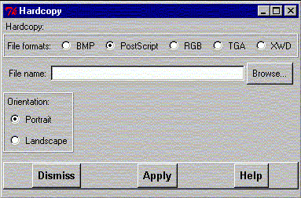

**************************************************************************
make a hardcopy widget
Leif Laaksonen CSC 1996
**************************************************************************
This is the main facility for producing a hardcopy of the picture in the graphics window. Currently gOpenMol supports the following output formats:
These formats should be enough to export the pictures to almost any text processing or image editing program for further processing.
On top of the page are the radio buttons for the supported formats. Use the file selection browser to select a file name. For the PostScript case it is possible to define the picture orientation.

Line command : see hardcopy command
**************************************************************************
LUL/1996
**************************************************************************